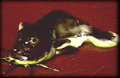

|
台灣麵塑藝術多以製作童玩為主要目的，平日多出現於特定的廟會祭典，偶爾也可見於園遊會中。一般來說，而捏麵人按製作過程的不同，有兩種派別，一種是「混色米雕」，一種是「塗色米雕」。
 混色米雕 混色米雕
所謂「混色米雕」就是一般我們認知的捏麵人，是事先將色料混到麵團，以各種色麵來捏製的手法，首先為你們介紹的是住在鹿港鎮的施錦江老先生，他做的就是混色米雕。老先生今年七十多歲，從事捏麵人這個行業己有五十多年的歷史，在這五十多年的歲月中，他不知捏製了多少個麵人。他當初學這行完全是興趣，沒想到一做，就是半個世紀。但是現在兒孫滿堂，生活不成問題，又回到了是為了興趣在做捏麵人啦。目前施老先生在空閒的時候，也收收徒弟，教小學生們做捏麵人。好讓我們下一代，從學習中得到前經驗的累積，使這項傳統技藝得以流傳下去，發揚光大。
塗色米雕
 接下來我們來看看另外一種捏麵「塗色米雕」。它是先將麵粉加冷水調至糊狀為止。放入鍋內去蒸，蒸好以後揉合均勻放著陰乾，揉合時要加入明礬粉石膏粉，然後再揉捏出設定的造形，現在開始上色，先畫底部，再畫頭部，再畫身體即成。擅長塗色米雕許安田老先生。所做捏麵就是一般擺在看席桌上的祭品。其實它們就是代替品因為一整套的看席，合起來共有二十四種不同的東西，有十二樣山珍，十二樣的海味，在早先交通不發達的時候，居山者不易有海產，居海者不易有山產，所以一律用捏麵來代替。久而久之也就成了不可缺少的一種祭品了。而廟裡的媽祖娘娘嘴角上掛的那一絲會心的微笑，似乎也在暗暗的讚嘆著捏麵師傅的一番巧思。
施教鏞
為鹿港區的捏麵藝人，已經出過兩本捏麵人書籍，從七、八歲就跟著家人跑江湖，一家四代都從事傳統藝術工藝，像是捏麵人、花燈、陶塑等，還曾經到過巴黎表演捏麵人的手藝，因此四十多年下來，自然對這份傳統工藝有著深厚的感情和熱愛。
施瑞麟
北港地區廟會的醮典儀式很多，當地的施瑞麟老師傅從事製作祭祀用麵塑已達六十餘年，可說是北港的地方特色之一，但隨著文明的進步，此項活動已逐漸沒落。但現在北港當地，仍持續承此業的老師傅僅剩施瑞麟一人。時間之長久及堅持，令人肯定其文化地位與價值。
黃景南
民國四年出生於彰化和美鎮，是以製作「麵塑禮花」聞名，是國內第一位以捏麵彩繪獲得薪傳獎的人士，為台灣麵塑的發揚者。關於其麵塑作品是以素麵捏製完成後，使用普通的廣告顏料上色，再經過透明漆的表面處理，使得顏色反射出透明鮮活的光澤。這種表現方式，實際上是捏麵與彩繪的結合，也可以說是彩塑藝術的另一種型態。
劉家財
年輕一輩的捏麵藝人劉家財，出身於玻璃工藝事業，經過對麵塑藝術材料的改良，將石英土、矽砂及化學原料加入成分中。作品捏製完成後，再放入水中煮沸，致使作品富有極大的彈性，猶如橡皮般可伸縮而不變形，自己將這種作品型態，稱之為「橡雕」，並向政府申請十五年專利，從此劉家財先生的捏麵人改名為「橡塑」。「橡塑」據稱百年不壞。
|